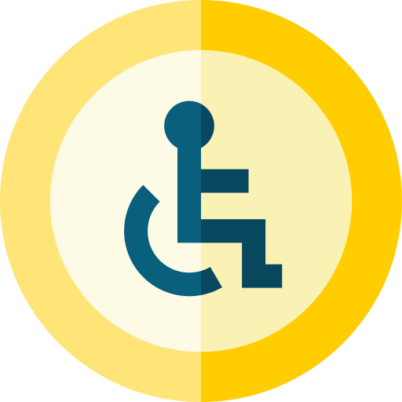

Situando a la Accesibilidad
UX Team • 2022

Accesibilidad Digital
Surge a partir de los derechos de las personas con discapacidad
Definimos la discapacidad
Un concepto que evoluciona y resulta de la interacción entre:
Las personas con algun tipo de deficiencia
las barreras debidas a la actitud y al entorno,que evitan su participación plena y efectiva en la sociedad, en igualdad de condiciones con las demás.
Modelos de discapacidad
Modelo Médico (Paternalismo y discriminación)
Modelo Social
(Equiparación y Autonomía) con perspectiva en DDHH.
¿Por qué nos importa?
Porque podemos hacer mucho, con poco.
La Convención
Sobre los Derechos de las Personas con Discapacidad.
Diciembre de 2006
Firmada por 164 países
Ratificada por 182 países
Argentina
Ratifica en 2008
2014 obtiene jerarquía institucional